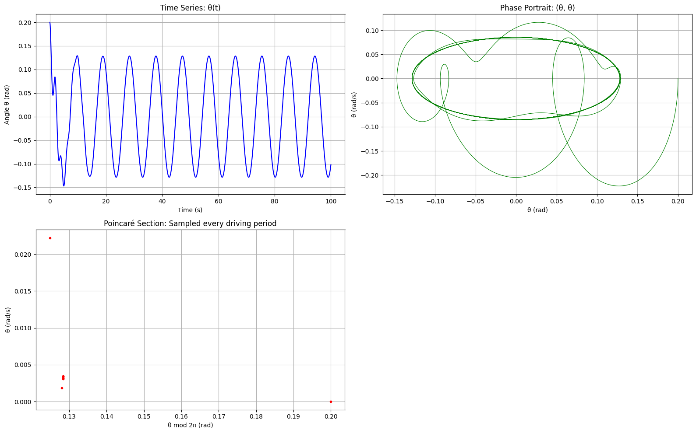

Problem 2
📚 Theoretical Foundation
⚖️ Equation of Motion
The motion of a forced damped pendulum is governed by the nonlinear differential equation:
\[
\[
\frac{d^2\theta}{dt^2} + b \frac{d\theta}{dt} + \frac{g}{L} \sin\theta = A \cos(\omega t)
\]
\]
Where:
- \(\theta(t)\): angle of the pendulum
- \(b\): damping coefficient
- \(g\): gravitational acceleration
- \(L\): length of the pendulum
- \(A\): amplitude of external forcing
- \(\omega\): driving frequency
🔄 Small-Angle Approximation
When \(|\theta| < 0.2\) rad (≈ 11°), use \(\sin\theta \approx \theta\). The equation simplifies to:
\[
\[
\frac{d^2\theta}{dt^2} + b \frac{d\theta}{dt} + \frac{g}{L} \theta = A \cos(\omega t)
\]
\]
This is a linear second-order ODE with sinusoidal forcing. Its general solution is:
\[\[
\theta(t) = \theta_{\text{homogeneous}}(t) + \theta_{\text{particular}}(t)
\]\]
- \(\theta_{\text{homogeneous}}(t)\): decays over time due to damping
- \(\theta_{\text{particular}}(t)\): oscillates at the driving frequency \(\omega\)
🎯 Resonance
Occurs when \(\omega\) is near the system's natural frequency:
\[\[
\omega_0 = \sqrt{\frac{g}{L}}
\]\]
At resonance, even small forces can produce large amplitude oscillations unless damping is significant.
🔍 Analysis of Dynamics
We analyze the effect of parameters:
- Damping \(b\): Reduces amplitude, can suppress chaos.
- Driving amplitude \(A\): Higher amplitude → more energy → more likely chaos.
- Driving frequency \(\omega\): Can trigger resonance or chaos depending on value.
🌀 Regular vs Chaotic Motion
- Regular: Motion is periodic and predictable. Phase portraits are smooth.
- Chaotic: Sensitive to initial conditions, aperiodic, and exhibits strange attractors in phase space.
⚙️ Practical Applications
| System | Description |
|---|---|
| Suspension bridges | Subject to periodic wind forces (e.g., Tacoma Narrows) |
| Clocks | Pendulums under damping and external driving |
| Energy harvesting | Convert oscillations into electricity |
| Electronic circuits | Analogous behavior in driven RLC circuits |
💻 Implementation in Python
Key features of the numerical simulation include:
- Use of
solve_ivpfor numerical integration - Time evolution plots of \(\theta(t)\)
- Phase portraits in \((\theta, \dot{\theta})\) space
- Poincaré sections sampled at multiples of driving period
You can vary \(b\), \(A\), and \(\omega\) to explore different dynamical regimes.
📈 Visualization Tools
- Time series: \(\theta(t)\) over time
- Phase portrait: \((\theta, \dot{\theta})\) shows periodic or chaotic nature
- Poincaré section: Sampled every driving period; chaos appears as scattered points
- Bifurcation diagram: Final angles vs. \(A\) show transitions to chaos
⚠️ Model Limitations & Extensions
- The small-angle approximation (\(\sin\theta \approx \theta\)) is only valid for small \(\theta\)
- Real-world systems may have:
- Nonlinear or velocity-dependent damping
- Non-periodic or random external forces
Extensions:
- Double pendulums
- Stochastic or noise-driven systems
- Discrete-time maps (e.g., kicked rotor)
